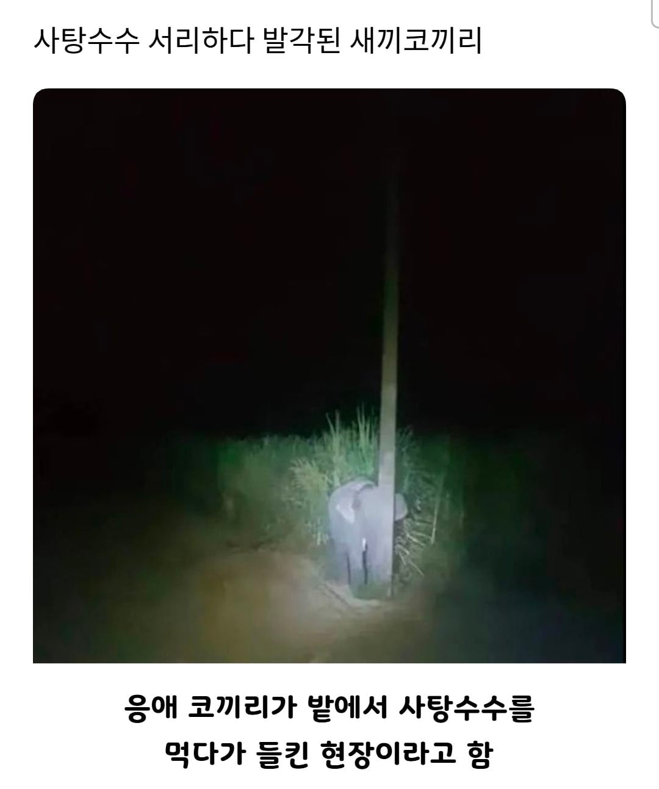
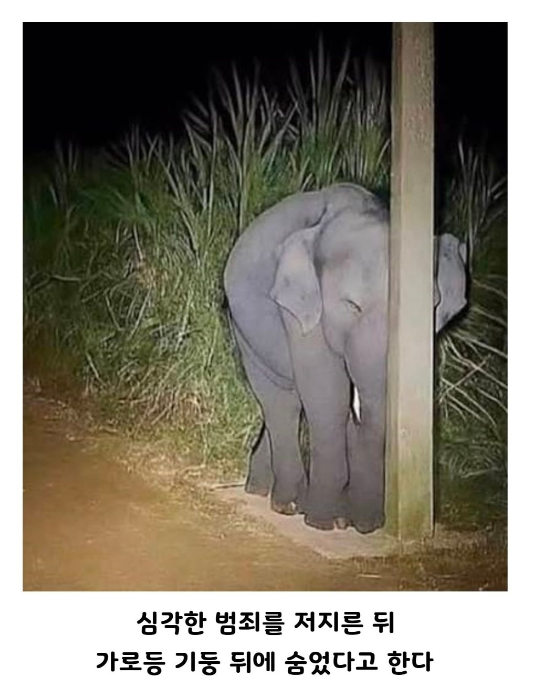
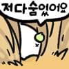

졸귀 ㅋㅋ
와! 정 말 못 찾 겠 다 !!
코끼리 : 안보이지?
네...
코끼리 : 잘하자
귀여워!
보통 눈을 가리게 숨지 않나 ㅋㅋㅋ
눈 꼭 감고있는게 졸귀네 ㅋㅋㅋㅋㅋ
ai 같당
코끼리가어딧어
어차피 못막아! 그게 이 생태계의 한계다!
졸귀 ㅋㅋㅋㅋㅋㅋㅋㅋㅋ
다리 모으고 눈 꼭 감고 있는거 졸귀 ㅎㅎㅎ
안보여
응애 코끼리가 어딨음?
에헤이 어디 뛰어난사육사 읎나 어디 세계는 전봇대뒤에 타이탄도 숨긴다 카던데

아기 코끼리가 어딨다는거임?


모른척해줘라 엄마부르기전에